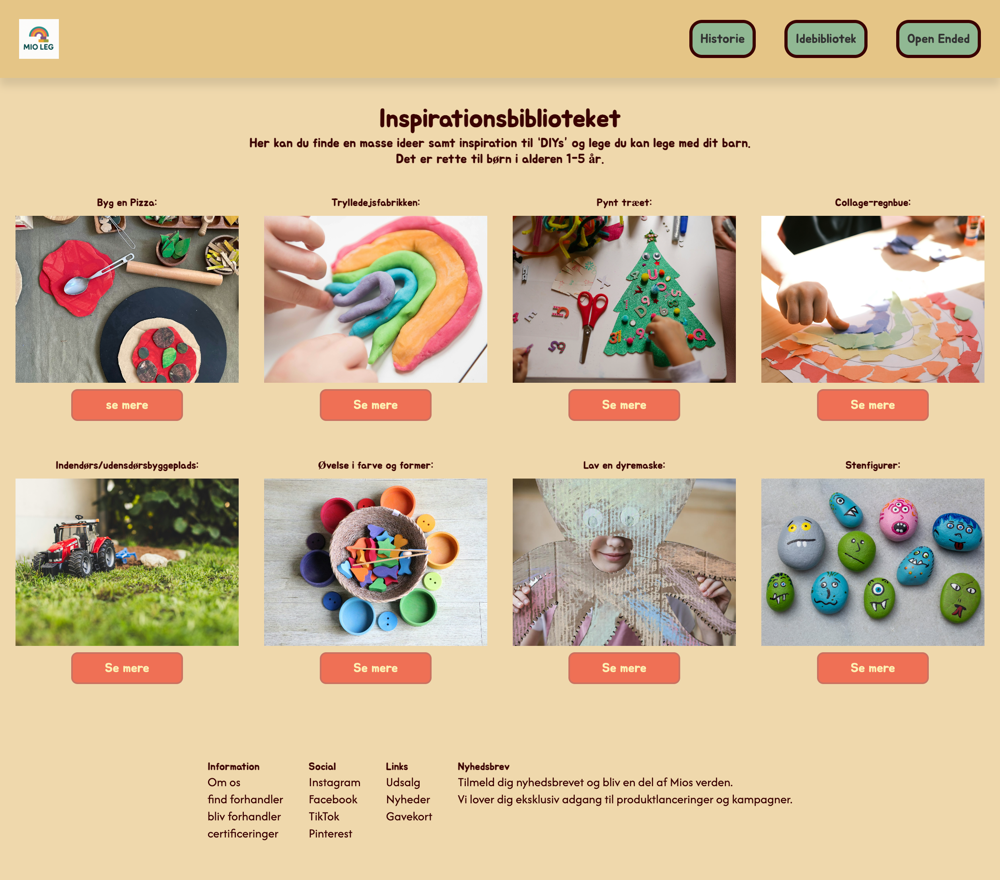

03


Tema 3 handlede primært om UX/UI og researchmetoder. Det var et forløb hvor vi skulle skabe indhold, ideudvikle, lave moodboards, skabe userstories, altså lære om alt det forarbejde der ligger før man skaber sit endelige website. Både wireframes og prototyper skulle vi i løbet af dette tema også stifte bekendtskab med, både LoFi og HiFi-versioner. Vi fik først en introduktion til hvordan man lavede simple wireframes i Figma, hvor man kunne lave både LoFi og HiFi prototyper man kunne integrere med. Det var mega spændende og motiverende at lave de klikbare prototyper så man fik en fornemmelse af hvordan ens website kunne komme til at se ud.
Dernæst begyndte vi så småt at teste. Teste vores prototype af, da det giver udvikleren et bedre billede af brugerens adfærd på ens website. Her var der tale om 5-sekunders testen og tænke-højt testen, to ud af mange forskellige både kvalitative og kvantitative test man kan foretage. 5-sekunders testen bruger til at se om brugeren opnår det man fx gerne vil kommunikere med ens forside. Det foregår således at testpersonen får fem sekunder til at tage et kig på forsiden og dernæst bliver spurgt om nogle relevante spørgsmål, som udvikleren senere hen kan bruge til evt justeringer af sit site. Tænke-højt testen, tester designet og brugervenligheden. Den tester altså det overordnede design og om brugere kan bevæge sig rundt på sitet. Måden man tester på er ved at stille testpersonen nogle opgaver som skal “løses” på websitet. Det kan fx være “kan du finde kontakt os” og så observeres der hvordan og hvor hurtigt personen løser opgaver og så får man noget data man kan bruge til at gå tilbage og eventuelt rette i ens design.
Vi kom også omkring test på det kodet site. Nemlig den test som hedder “Lighthousetest”. Det er et gratis google-værk som man kan benytte sig af, som analyserer ens website på få sekunder. Den laver en rapport (score) som siger noget om tilgængelighed, best practice og SEO og hvordan man eventuelt kan optimere ens website så den kører endnu bedre.
Afslutningsvis fik vi undervisning i præsentationsteknikker. Hvordan man bedst strukturer en præsentation, hvilke elementer der er gode at have med og hvordan man bedst kommer igennem en fremlæggelse. Alt dette mundede ud i et emnesite (hvor jeg valgte at lave et site om legetøj og leg). Jeg lagde ud med en masse forarbejde blandt andet i form af research, moodboards, surveys, userstories, testet…jeg fik kodet fem sider i alt. Jeg fik til sidst på forløbet præsenteret hele min proces og fik rigtig meget god respons og erfaring.
SE SITET HER